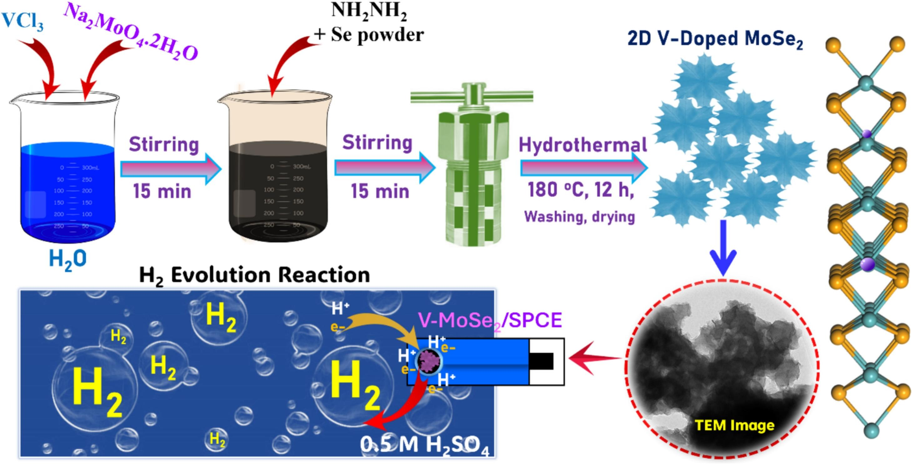
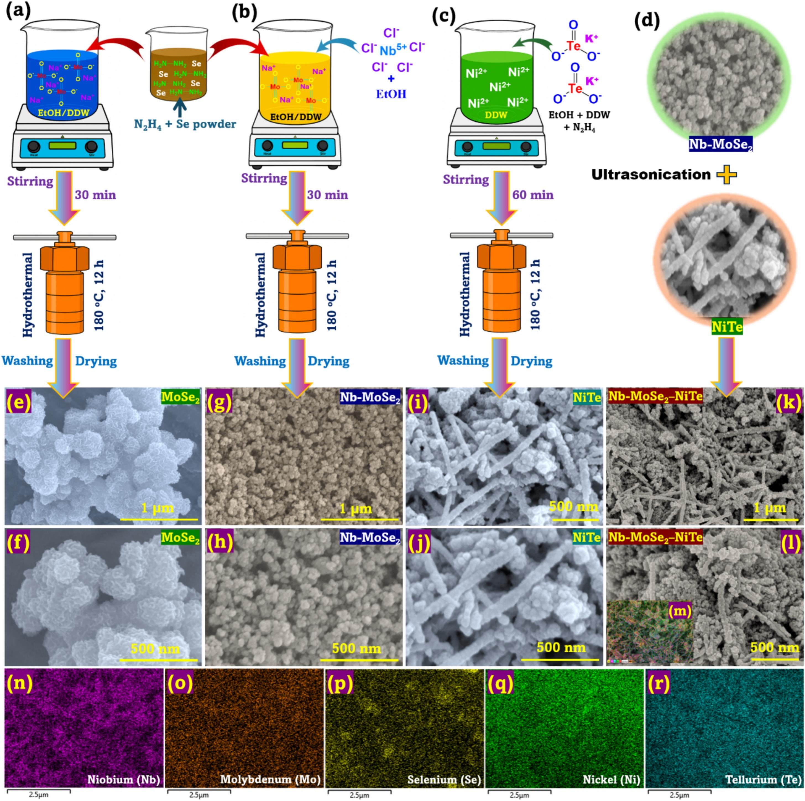

Project
Doped Transition Metal Dichalcogenides for Hydrogen Evolution
Overview
Transition metal dichalcogenides (TMDs) such as molybdenum diselenide (MoSe2) are promising, earth-abundant electrocatalysts for the hydrogen evolution reaction (HER) — the cathode reaction that produces clean hydrogen from water. Their appeal comes from catalytically active edge sites and favorable electronic properties. However, pristine MoSe2 is limited by an inert basal plane and low electrical conductivity. This project tackles both limitations through two complementary strategies — heteroatom doping and heterostructure engineering — to unlock the full HER potential of MoSe2.
The Strategy
- Doping — introducing metal dopants (V, Nb) into the MoSe2 lattice tunes its electronic structure, induces lattice contraction, and raises the density of catalytically active sites.
- Heterostructures — coupling MoSe2 with a second conductive phase creates synergistic interfaces that improve conductivity and provide additional active sites.
- Goal — approach precious-metal (Pt) activity for the HER using low-cost, scalable materials.
System 1 — Vanadium Doping
Vanadium-doped MoSe2 nanosheets
Here, MoSe2 was doped with vanadium (V-MoSe2) through a simple hydrothermal reaction and characterized by FE-SEM, FE-TEM, XRD, and XPS. Vanadium doping induces a lattice contraction and drives the material toward a more metallic-like phase with enhanced electrical conductivity, while increasing the number of catalytically active sites that promote the HER.
- V-MoSe2 was superior to undoped MoSe2 and comparable to benchmark Pt/C for the HER.
- It required an overpotential of ~353 mV to reach 10 mA cm−2 (vs. ~217 mV for Pt/C).
- The enhancement is attributed to lattice contraction, higher conductivity, and a greater density of active sites.

System 2 — Doping + Heterostructure
Nb-doped MoSe2 / NiTe heterostructure
This system combines both strategies: niobium-doped MoSe2 is integrated with nickel telluride (NiTe) to form a synergistic heterostructure for the HER in acidic media. Nb doping modulates the electronic structure of MoSe2, while NiTe contributes enhanced conductivity and introduces additional active interfacial sites. Structural and surface analyses confirmed successful doping and heterostructure formation.
- The optimized Nb-MoSe2–NiTe achieved a low overpotential of ~395 mV at 50 mA cm−2.
- It showed a Tafel slope of ~242 mV dec−1 and a high electrochemical surface area (~377.5 cm2).
- The improvement stems from synergistic interactions that promote charge transfer and hydrogen adsorption.

Approach & Methods
- Synthesis — hydrothermal routes to grow doped MoSe2 and to assemble the MoSe2/NiTe heterostructure.
- Characterization — XRD, XPS, FE-SEM, and FE-TEM to confirm doping, phase, morphology, and interface formation.
- Electrochemical testing — HER performance evaluated through overpotential, Tafel slope, electrochemical surface area, and stability.
- Benchmarking — comparison against undoped MoSe2 and commercial Pt/C.
Key Takeaways
- Metal doping (V, Nb) is an effective way to activate MoSe2 by tuning its electronic structure and creating active sites.
- Pairing doped MoSe2 with a conductive second phase (NiTe) further boosts HER activity through interfacial synergy.
- Together, doping and interface engineering offer a low-cost, rational route toward efficient hydrogen production.
Related Publications
- Vanadium-doped MoSe2 Nanosheets: Induced lattice contraction and enhanced conductivity for superior hydrogen evolution reaction Electrochemistry Communications View paper
- Synergistic interface of Nb-doped MoSe2 and NiTe heterostructure enables efficient electrocatalysis for hydrogen evolution Electrochemistry Communications View paper